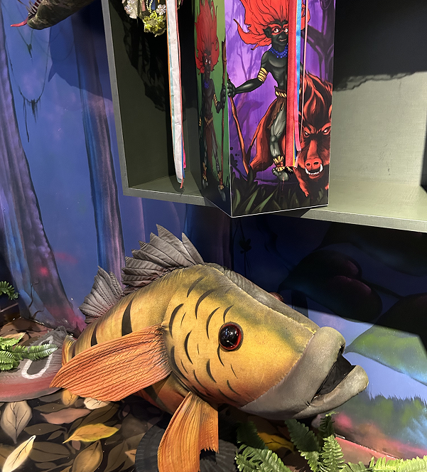
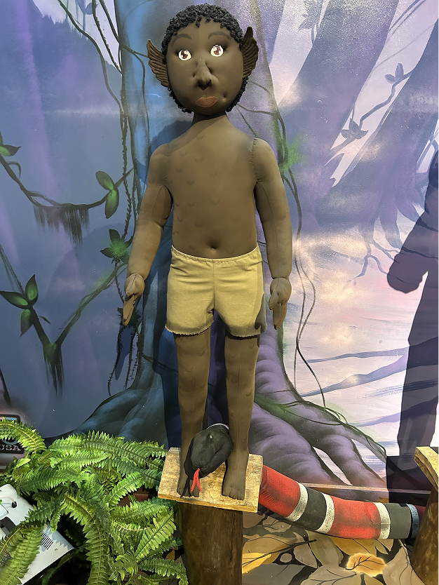
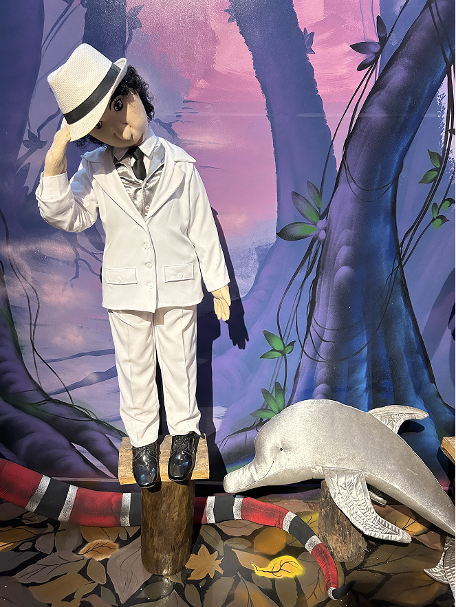
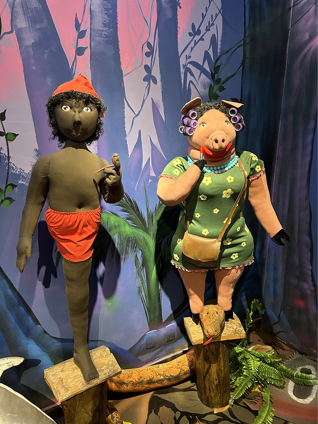
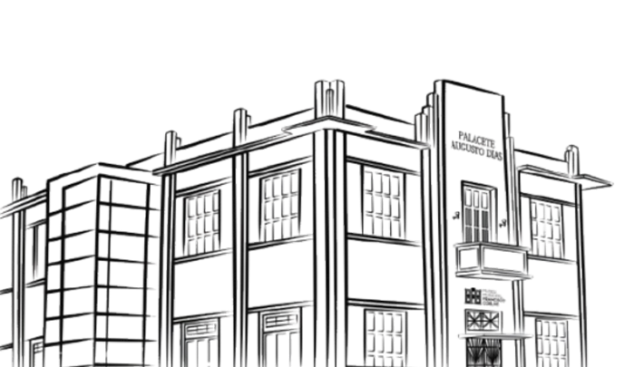

Essa sala apresenta o imaginário da população de Marabá e da Amazônia!

LENDAS PASSADAS DE GERAÇÃO EM GERAÇÃO
CONHEÇA A PORCA DE BOBES
Uma lenda original de Marabá
A lenda da Porca de Bobes, típica de Marabá, conta que uma mulher que maltratava a mãe foi amaldiçoada e passou a se transformar em uma porca com bobs na cabeça. Ela aparecia à noite para assustar pessoas, principalmente nas redondezas do atual Estádio Zinho Oliveira, que antes era um matagal com uma ponte isolada. Dizem que ela ainda aparece em forma de punição.
É considerada a única lenda original de Marabá, diferente de outras, como a Boiúna, Caipora, Matinta Pereira e o Boto, que são mais conhecidas no Brasil.
OUTRAS LENDAS QUE VOCÊ ENCONTRARÁ NO MUSEU

Nego D'água

Boto

CONHEÇA ESSAS E MAIS LENDAS NO MMFC
QUER CONHECER MAIS LENDAS
COMO ESSAS?
Venha ver de perto e nos faça uma visita!
museumarabamidias@gmail.com
